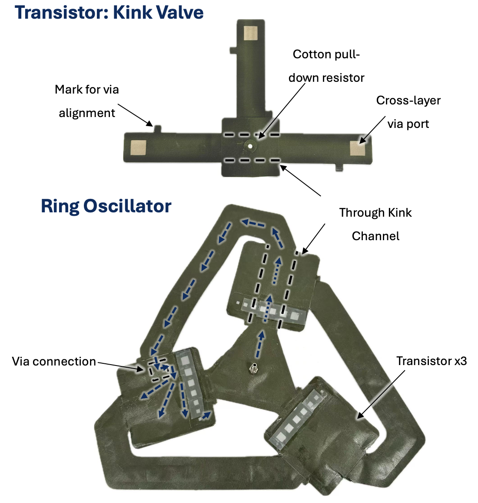

Fabric Logic Library: A Framework for Integrated Mechanical Circuitry in Smart Pneumatic Fabrics
To enable predictable, electronics-light control in soft robots and wearables, I developed first-principles models and Simscape/Simulink simulations for a fabric-native library of pneumatic logic elements, including cotton resistors, channels and vias, pouch capacitors, and kink valves. I created a fabric-transistor abstraction, designed model-sized ring oscillators, and validated the predictions against hardware, with period-pressure trends matching experiment within 20% error. The resulting blockset and design charts supported rapid, simulation-first system design for integrated fabric logic.
